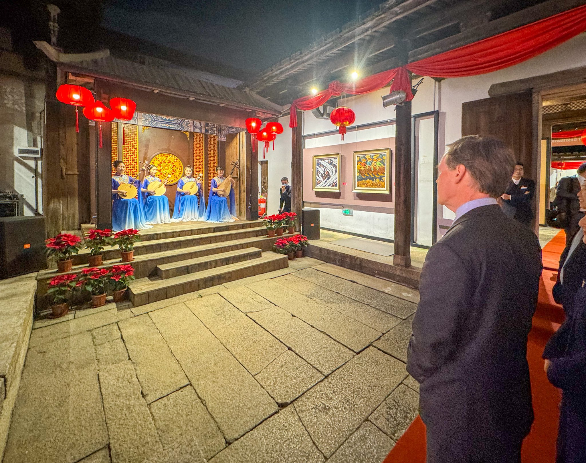

面向音乐老师的民歌与器乐课堂资源库
IYGE AI 教案生成器
按年级、调式、节奏、主题筛选曲目，再让 AI 根据学生画像生成一节课可用教案。Search the Collection
正在加载曲库...
生成结果
选择 1-3 首曲目后生成教案。
素材与曲目信息来源
公开音频来自 Wikimedia Commons；流行与 rap 曲目仅提供教学元数据，不内置版权录音或歌词。实际产品可替换为学校自有授权曲库。

面向音乐老师的民歌与器乐课堂资源库
正在加载曲库...
公开音频来自 Wikimedia Commons；流行与 rap 曲目仅提供教学元数据，不内置版权录音或歌词。实际产品可替换为学校自有授权曲库。